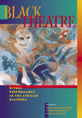

An insider's view of Black theatres of the world and how they reflect their culture, concerns, and history
An insider's view of Black theatres of the world and how they reflect their culture, concerns, and history


 An insider's view of Black theatres of the world and how they reflect their culture, concerns, and history
An insider's view of Black theatres of the world and how they reflect their culture, concerns, and history

|  |
Black TheatreRitual Performance in the African Diasporaedited by Paul Carter Harrison, Victor Leo Walker II and Gus Edwardspaper EAN: 978-1-56639-944-9 (ISBN: 1-56639-944-0) |
Finalist for the George Freedley Memorial Award for an outstanding book in theatre or another area of live performance from the Theatre Library Association, 2002
"Black Theatre is an indispensable volume—insightful, wide-ranging, global in scope—to be enjoyed, studied, mulled over and argued with."
—Douglass Turner Ward, Founder of The Negro Ensemble Company
Generating a new understanding of the past—as well as a vision for the future—this path-breaking volume contains essays written by playwrights, scholars, and critics that analyze African American theatre as it is practiced today.
Even as they acknowledge that Black experience is not monolithic, these contributors argue provocatively and persuasively for a Black consciousness that creates a culturally specific theatre. This theatre, rooted in an African mythos, offers ritual rather than realism; it transcends the specifics of social relations, reaching toward revelation. The ritual performance that is intrinsic to Black theatre renews the community; in Paul Carter Harrison's words, it "reveals the Form of Things Unknown" in a way that "binds, cleanses, and heals."
Excerpt available at www.temple.edu/tempress
"In 1970, in the heat of the Black Arts Movement, Paul Carter Harrison published his seminal The Drama of Nommo, challenging readers to look beyond the political orthodoxy of kitchen sink realism to discern the aesthetic foundations of black theatre. This present anthology demonstrates the impressive extent to which scholars, playwrights, and directors have built upon that call. Drawing from performance practices in Africa, the Caribbean, the United States, and black Britain, this landmark collection delineates the cultural specificity of an African diaspora theatre that, while it appears to 'wear the mask' of conformity to EuroAmerican values, enacts a profoundly different world view aimed at confronting an oppressive past and reaffirming the humanity of black peoples. The anthology's analytic rigor and creative insight set a challenge for subsequent generations to engage."
—Sandra L. Richards, Leon Forrest Professor of African American Studies and Professor of Theatre and Performance Studies at Northwestern University
"The spirit and the intellect of the late Larry Neal, as well as the tremendously resilient legacy of the radical Black theatre movement of the sixties and seventies, animate most of the essays and documents collected in this volume. It is a feast of powerful critical and theoretical reflections on the past and the future of Black theatre in this country and in other parts of the African diaspora. Without the slightest nudge toward racial absolutism or essentialism, the volume is a model of how 'race' can be deployed as a subtle and progressive analytic category in contemporary dramatic and cultural criticism. This book should be compulsory reading for every student of contemporary theatre scholarship."
—Biodun Jeyifo, Professor of English, Cornell University
"...a powerful examination of ritual-based performance traditions practiced throughout the African diaspora. It belongs on the shelf of anyone studying black performance. [The editors] succeed on many levels with this collection of compelling articles....this text is a valuable contribution to current critical, historical and theoretical debate about this rich and varied field."
—Theatre Research International
"[E]ssential. This book illuminates, challenges, and expands the consciousness. It also inspires the reader..."
—The African American Review
"This book is a powerful examination of ritual-based performance traditions practiced throughout the African diaspora. It belongs on the shelf of anyone studying black performance.... This text is a valuable contribution to current critical, historical and theoretical debate about this rich and varied field."
—Theatre Research International
"What is to be celebrated regarding this anthology is that it has been edited by black theater educators and practitioners."
—Research in African Literatures
"This important and groundbreaking collection of 32 essays is particularly valuable to those who have scant knowledge about African American theater, as the ideas are informing, eye-opening, and challenging."
—Library Journal
"Black Theatre is a gateway: to follow its paths creates a lifetime of study and art-making because a lifetime is what each essayist has contributed. It will find a much deserving home in the classroom and on the bookshelves of serious, well-minded theatre practitioners everywhere."
—RAIN TAXI
"...a godsend for African and African-American studies departments everywhere..."
—American Theatre
"A remarkable sense of intra/inter-textuality also makes Black Theatre a landmark publication in contemporary black theatre studies..."
—Theatre Journal
Praise/Word – Paul Carter Harrison
Part I: African Roots
Introduction – Victor Leo Walker II
1. Roots in African Drama and Theatre – J. C. de Graft
2. The African Heritage of African American Art and Performance – Babatunde Lawal
3. Agones: The Constitution of a Practice – Tejumola Olaniyan
4. What the Twilight Says: An Overture – Derek Walcott
5. Caribbean Narrative: Carnival Characters—In Life and in the Mind – Gus Edwards
6. Rebaptizing the World in Our Own Terms: Black Theatre and Live Arts in Britain – Michael McMillan and SuAndi
Part II: Mythology And Metaphysics
Introduction – Victor Leo Walker II
7. The Fourth Stage: Through the Mysteries of Ogun to the Origin of Yoruba Tragedy – Wole Soyinka
8. The Candomblé and Eshu-Eleggua in Brazilian and Cuban Yoruba-Based Ritual – Marta Moreno Vega
9. Legba and the Politics of Metaphysics: The Trickster in Black Drama – Femi Euba
10. Art for Life's Sake: Rituals and Rights of Self and Other in the Theatre of Aimé Césaire – Keith L. Walker
11. Sycorax Mythology – May Joseph
12. Conjuring as Radical Re/Membering in the Works of Shay Youngblood – Joni L. Jones
13. Archetype and Masking in LeRoi Jones/Amiri Baraka's Dutchman – Victor Leo Walker II
Part III: Dramaturgical Practice
Introduction – Paul Carter Harrison
14. The Dramaturg's Way: Meditations on the Cartographer at the Crossroads – Deborah Wood Holton
15. Introduction to Moon Marked and Touched by Sun – Sydné Mahone
16. Kennedy's Travelers in the American and African Continuum – Paul K. Bryant-Jackson
17. Mojo and the Sayso: A Drama of Nommo That Asks, "Is Your Mojo Working?" – Andrea J.Nouryeh
18. Ritual Poetics and Rites of Passage in Ntozake Shange's for colored girls who have considered suicide / when the rainbow is enuf – Jean Young
Part IV: Performance
Introduction – Gus Edwards
19. Form and Transformation: Immanence of the Soul in the Performance Modes of Black Church and Black Music – Paul Carter Harrison
20. The Sense of Self in Ritualizing New Performance Spaces for Survival – Beverly J. Robinson
21. Barbara Ann Teer: From Holistic Training to Liberating Rituals – Lundeana M. Thomas
22. Bopera Theory – Amiri Baraka
23. From Hip-Hop to Hittite: Part X – Keith Antar Mason
24. Members and Lames: Language in the Plays of August Wilson – William W. Cook
25. Porque Tu No M'entrende? Whatcha Mean You Can't Understand Me? – Ntozake Shange
26. Performance Method – George C. Wolfe
27. Afterword: Testimony of a Witness – Eleanor W. Traylor
About the Contributors
 | Paul Carter Harrison is playwright in residence at the Theatre Center, Columbia College, Chicago. He is the author of several books including, The Drama of Nommo and the editor of several play anthologies. His play, The Great MacDaddy, received an Obie Award for playwriting. |
 | Victor Leo Walker is Chief Executive Officer of the African Grove Institute for the Arts, Inc. and the author of The Cultural MatriX: Los Angeles Inner City Cultural Center, 1965 to 1998 (forthcoming). |
 | Gus Edwards teaches Film Studies and directs a multi-ethnic theatre program at Arizona State University. He has published two volumes of monologues from his plays including The Offering, Black Body Blues, and Louie & Ophelia. He is coeditor with Paul Carter Harrison of the anthology, Classic Plays from the Negro Ensemble Company. |
Contributors: J.C. de Graft, Babatunde Lawal, Tejumola Olanian, Derek Walcott, SuAndi and Michael McMillan, Wole Soyinka, Marta Vega, Femi Euba, Keith Walker, May Joseph, Joni Jones, Debra Holton, Sydne Mahone, Paul K. Bryant-Jackson, Andrea J. Nouryeh, Jean Young, Beverly Robinson, Lundeana Thomas, Amiri Baraka, Keith Antar Mason, William Cook, Ntozake Shange, George E. Wolfe, Eleanor Traylor, and the editors.
Literature and Drama
Race and Ethnicity
African American Studies
© 2015 Temple University. All Rights Reserved. This page: http://www.temple.edu/tempress/titles/1429_reg.html.